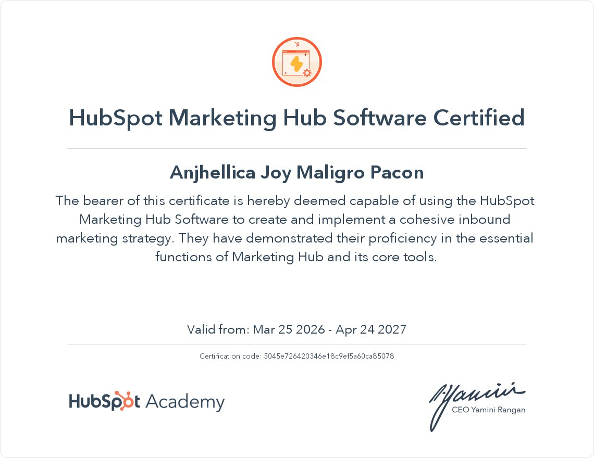

Information Systems Student • Aspiring IT Business Analyst
Turning problems into organized systems and practical solutions.
I enjoy understanding processes, identifying gaps, and creating solutions that help people work more effectively. My work focuses on business analysis, documentation, process improvement, and user-centered design.
ABOUT
Building solutions through analysis, organization, and collaboration.
I'm Anjhellica Joy Pacon, an Information Systems student from CIIT College of Arts and Technology. I enjoy taking ownership of projects, refining ideas, organizing information, and helping teams transform concepts into practical solutions.
My goal is to grow into an IT Business Analyst who bridges business needs and technology through research, communication, and problem-solving.
SELECTED RELEVANT SCHOOL WORK AND PROJECTS
A showcase of my academic and personal projects.
MenuWise
April 2026 - Present
View Details
Problem
- Food waste among MSMEs
- Limited inventory visibility
- Lack of actionable operational insights
Actions
- Refined system concept
- Designed user experience and workflows
- Coordinated documentation and project activities
Result
- Functional prototype
- Structured project documentation
- Testable solution concept
MenuWise
April 2026 - Present View Details- Food waste among MSMEs
- Limited inventory visibility
- Lack of actionable operational insights
- Refined system concept
- Designed user experience and workflows
- Coordinated documentation and project activities
- Functional prototype
- Structured project documentation
- Testable solution concept
Overview: MenuWise is an inventory analytics and food waste monitoring platform designed to help food-based MSMEs make informed operational decisions through inventory tracking, waste monitoring, and performance analytics.
Role: Project Lead • UI/UX Designer • Documentation Contributor
Tools: Figma • Lovable AI App Builder • Google Docs • Lucidchart
Why This Mattered
- Food waste remains a significant challenge for food establishments.
- Many inventory systems focus on stock shortages while providing limited visibility into waste caused by overproduction and overpurchasing.
- MSMEs often lack accessible decision-support tools that transform operational data into actionable insights.
What I Did
- Helped define and refine the overall system concept and scope.
- Developed the project's initial prototype and user experience flow.
- Designed interface layouts and workflows in Figma.
- Reviewed feature requirements, system documentation, and user experience considerations.
- Coordinated tasks, monitored project progress, and supported stakeholder engagement.
- Conducted usability reviews and recommended improvements.
Outcome
Produced a working web application prototype that demonstrates how inventory and food waste data can support business decision-making.
Project Link: https://menuwiseapp.lovable.app/
Deliverables
- Functional Web Application Prototype
- Figma Interface Designs
- Workflow Diagrams
- Feature Documentation
- Research Documentation
Key Learnings
Learned the importance of translating research findings and operational challenges into practical system requirements and user-focused solutions.
assets/projects/menuwise/.
UP Diliman Business Review
February 2026
View Details
Problem
- Need to understand management practices
- Need to evaluate sustainability initiatives
Actions
- Conducted research
- Synthesized information
- Developed written and visual outputs
Result
- Business review paper
- Presentation of findings
- Strengthened analytical skills
UP Diliman Business Review
February 2026 View Details- Need to understand management practices
- Need to evaluate sustainability initiatives
- Conducted research
- Synthesized information
- Developed written and visual outputs
- Business review paper
- Presentation of findings
- Strengthened analytical skills
Overview: A research-based review examining management functions and sustainability practices within UP Diliman while relating organizational practices to management concepts discussed in class.
Role: Researcher • Writer • Presenter
Tools: Google Docs • Canva
Why This Mattered
- Developed practical understanding of organizational management concepts.
- Applied management theories to real-world institutions.
- Strengthened information synthesis and analytical writing skills.
What I Did
- Conducted research using publicly available sources.
- Evaluated management practices and sustainability initiatives.
- Organized findings into a structured review paper.
- Developed visual presentation materials.
- Presented key findings and recommendations.
Outcome
Produced a research paper and presentation connecting academic concepts with real organizational practices.
Deliverables
- Business Review Paper (add document link)
- Research Notes (add document link)
- Presentation Slides (add document link)
Key Learning
Improved my ability to analyze organizations, synthesize information from multiple sources, and communicate insights through structured reports.
assets/projects/up-diliman-business-review/.
Budget Forecasting Web Application
Add date
View Details
Problem
- Limited visibility into future finances
- Difficulty predicting expense impact
- Reactive budgeting behavior
Actions
- Designed forecasting workflows
- Built core application features
- Developed financial simulations
Result
- Functional budgeting tool
- Improved financial visibility
- Better planning support
Budget Forecasting Web Application
Add date View Details- Limited visibility into future finances
- Difficulty predicting expense impact
- Reactive budgeting behavior
- Designed forecasting workflows
- Built core application features
- Developed financial simulations
- Functional budgeting tool
- Improved financial visibility
- Better planning support
Overview: A budgeting and forecasting application that helps users understand how planned expenses may affect their future financial position before making spending decisions.
Role: Concept Developer • Product Designer • Full-Stack Developer
Tools: Next.js • React • TypeScript • Tailwind CSS • Visual Studio Code • Vercel • GitHub
Why This Mattered
- Many people focus on current balances rather than long-term financial impact.
- Budgeting decisions are often made without understanding future consequences.
- Financial visibility supports better planning and decision-making.
What I Did
- Designed the budgeting and forecasting workflow.
- Developed the application's interface and forecasting functionality.
- Built logic to simulate future expense scenarios.
- Tested usability and refined the user experience.
- Iterated on features based on real-world budgeting needs.
Outcome
Created a web application that allows users to visualize the effect of future expenses before committing to financial decisions.
Deliverables
- Budget Forecasting Web Application
- Financial Projection Features
- User Interface Design
- Expense Simulation Workflow
Key Learning
Strengthened my understanding of information presentation, decision-support design, and transforming data into meaningful user insights.
assets/projects/budget-forecasting-web-app/.
Church Technical Operations
Add date
View Details
Problem
- Complex technical requirements
- Time-sensitive operations
- Need for consistent execution
Actions
- Coordinated technical setup
- Managed systems during events
- Followed documented procedures
Result
- Reliable operations
- Reduced disruptions
- Consistent event support
Church Technical Operations
Add date View Details- Complex technical requirements
- Time-sensitive operations
- Need for consistent execution
- Coordinated technical setup
- Managed systems during events
- Followed documented procedures
- Reliable operations
- Reduced disruptions
- Consistent event support
Overview: Provided technical support for weekly services and special events by coordinating presentations, livestreams, and audio systems to ensure reliable event execution.
Role: Lead Technical Operations Volunteer
Tools: Presentation Software • Livestream Platforms • Audio Equipment • Operational Checklists
Why This Mattered
- Technical reliability directly impacts event delivery.
- Multiple systems must operate together under time-sensitive conditions.
- Structured processes help minimize disruptions.
What I Did
- Prepared presentation, projection, and audio systems.
- Managed livestream operations during events.
- Supported technical troubleshooting and issue resolution.
- Coordinated setup and shutdown activities.
- Maintained and followed operational procedures and checklists.
Outcome
Helped ensure smooth, uninterrupted technical operations across services and events.
Deliverables
- Technical Setup Checklists (add document link)
- Operational Procedures (add document link)
- Event Support Workflows (add document link)
Key Learnings
Learned the value of preparation, documentation, coordination, and maintaining consistent processes under pressure.
assets/projects/church-technical-operations/.
Sewpresa Crochets
2025 - Present
View Details
Problem
- Tracking customer orders and deadlines
- Managing business information
- Maintaining consistent communication
Actions
- Developed tracking systems
- Organized records
- Standardized communications
Result
- Streamlined operations
- Improved customer management
- Better information organization
Sewpresa Crochets
2025 - Present View Details- Tracking customer orders and deadlines
- Managing business information
- Maintaining consistent communication
- Developed tracking systems
- Organized records
- Standardized communications
- Streamlined operations
- Improved customer management
- Better information organization
Overview: A small business focused on custom crochet products requiring effective order tracking, customer communication, and process organization.
Role: Owner • Operations Manager
Tools: Instagram • Facebook • Meta Business Suite • Google Docs • Google Sheets
Why This Mattered
- Small businesses rely on organized information to operate efficiently.
- Customer orders, payments, and deadlines require consistent tracking.
- Clear communication improves customer experience and trust.
What I Did
- Managed customer inquiries and order fulfillment.
- Created systems to track orders, deadlines, and payments.
- Standardized customer communication through reusable templates.
- Maintained business records and operational documentation.
- Created social media content and promotional materials.
Outcome
Established repeatable processes that improved organization, communication, and operational efficiency.
Deliverables
- Order Tracking System (add document link)
- Deadline Management Sheet (add document link)
- Receipt Tracking Records (add document link)
- Customer Response Templates (add document link)
- Marketing Content
Key Learnings
Developed stronger organizational, communication, and information management skills through hands-on business operations.
assets/projects/sewpresa-crochets/.
Anthem Cafe Social Media Strategy Guide
Add date
View Details
Problem
- Inconsistent social media communication
- Lack of structured content planning
Actions
- Conducted research
- Developed recommendations
- Organized communication guidelines
Result
- Completed strategy guide
- Improved communication framework
- Better content planning process
Anthem Cafe Social Media Strategy Guide
Add date View Details- Inconsistent social media communication
- Lack of structured content planning
- Conducted research
- Developed recommendations
- Organized communication guidelines
- Completed strategy guide
- Improved communication framework
- Better content planning process
Overview: A research-based communication guide designed to improve brand consistency and audience engagement through structured social media planning.
Role: Researcher • Strategy Contributor
Tools: Google Docs • Canva • Google Scholar
Why This Mattered
- Businesses benefit from consistent and intentional communication.
- Content planning improves team coordination and audience engagement.
- Documented guidelines promote long-term brand consistency.
What I Did
- Researched audience engagement practices and communication strategies.
- Reviewed existing content approaches and opportunities for improvement.
- Developed practical recommendations and planning guidelines.
- Organized findings into a structured communication guide.
Outcome
Produced a comprehensive guide that supported more consistent social media communication and content planning.
Deliverables
- Social Media Strategy Guide (add document link)
- Communication Recommendations (add document link)
- Content Planning Framework (add document link)
Key Learnings
Learned how research and structured communication can support branding, collaboration, and audience engagement goals.
assets/projects/anthem-cafe-social-media-strategy-guide/.CERTIFICATIONS
Courses, credentials, and continued learning.



Select an image or PDF card to open the full certificate.
CONTACT
Let's connect and build something.
I am open to opportunities in business analysis, UI/UX design, and IT project coordination.